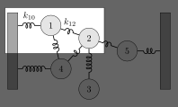
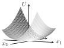

7 covariance and precision
https://en.wikipedia.org/wiki/Mahalanobis_distance
https://en.wikipedia.org/wiki/Multivariate_normal_distribution
7.1 conditional independence theorem
I have three random variables: X, Y and Z. We assume their joint probability density to by a gaussian with zero mean in all directions, and a (symmetric) precision matrix called \Lambda. We can write the pdf as
p(X,Y,Z) \propto \exp\left( -\frac{1}{2} x^T \Lambda x \right), \tag{7.1}
where x=(X,Y,Z)^T is a column vector.
Theorem 7.1 The matrix component \Lambda_{XZ}=0 iff X and Z are conditionally independent given Y. As a mathematical expression:
\Lambda_{XZ}=0 \iff X\perp Z \mid Y
Proof. Let’s write out x^T \Lambda x explicitly. Our convention is that \Lambda_{ij} denotes the matrix component in the row i and column j.
\begin{align*} x^T \Lambda x =& \begin{pmatrix}X&Y&Z\end{pmatrix} \begin{pmatrix} \Lambda_{XX}&\Lambda_{XY}&\Lambda_{XZ}\\ \Lambda_{YX}&\Lambda_{YY}&\Lambda_{YZ}\\ \Lambda_{ZX}&\Lambda_{ZY}&\Lambda_{ZZ} \end{pmatrix} \begin{pmatrix}X\\Y\\Z\end{pmatrix} \\ =& \begin{pmatrix}X&Y&Z\end{pmatrix} \begin{pmatrix} \Lambda_{XX}X+\Lambda_{XY}Y+\Lambda_{XZ}Z \\ \Lambda_{YX}X+\Lambda_{YY}Y+\Lambda_{YZ}Z \\ \Lambda_{ZX}X+\Lambda_{ZY}Y+\Lambda_{ZZ}Z \end{pmatrix} \\ =& X(\Lambda_{XX}X+\Lambda_{XY}Y+\Lambda_{XZ}Z) + \\ &Y(\Lambda_{YX}X+\Lambda_{YY}Y+\Lambda_{YZ}Z) + \\ &Z(\Lambda_{ZX}X+\Lambda_{ZY}Y+\Lambda_{ZZ}Z) \\ =& X^2 \Lambda_{XX} + Y^2 \Lambda_{YY} + Z^2 \Lambda_{ZZ} + \\ & 2XY \Lambda_{XY} + 2XZ \Lambda_{XZ} + 2YZ \Lambda_{YZ}, \end{align*}
where we used in the last step the fact that \Lambda is symmetric, therefore \Lambda_{ij}=\Lambda_{ji}.
The next step is to condition Equation 7.1 on Y. This means that we treat the random variable Y as a known number, we’ll call it y. Let’s see what happens. When we make the substitution Y=y. Let’s start with the left-hand side:
p(X,Y=y,Z) = p(X,Z|Y=y)p(Y=y).
If this looks weird, remember the fundamental equation regarding the probability of two random variables A and B:
p(A,B) = P(A\mid B)p(B).
The equation for X,Y,Z is exactly the same thing. So we learn that substituting Y=y is the same as conditioning for Y, up to a constant multiplication factor. Now let’s do the same substitution for argument of the exponent on the right-hand side:
\begin{align*} \Big[x^T \Lambda x\Big]_{Y=y} =& X^2 \Lambda_{XX} + y^2 \Lambda_{YY} + Z^2 \Lambda_{ZZ} + \\ & 2Xy \Lambda_{XY} + 2XZ \Lambda_{XZ} + 2yZ \Lambda_{YZ} \\ =& \underbrace{X^2 \Lambda_{XX} + 2Xy \Lambda_{XY}}_{f(X)} + \\ & \underbrace{Z^2 \Lambda_{ZZ} + 2yZ \Lambda_{YZ}}_{g(Z)} + \\ & \underbrace{2XZ \Lambda_{XZ}}_{h(X,Z)} + \underbrace{y^2 \Lambda_{YY}}_{\text{const}} \end{align*}
We found out that when we make the substitution Y=y in x^T \Lambda x we get a result that depends on terms that only depend on X, f(X), or only on Z, g(Z), or on both, h(X,Z), or on neither (constant):
\Big[x^T \Lambda x\Big]_{Y=y} = f(X) + g(Z) + h(X,Z) + \text{const}.
Now let’s put everything together. Substituting Y=y in Equation 7.1 gives
\begin{equation*} p(X,Z|Y=y)\cancel{p(Y=y)} \propto \exp \left[ -\frac{1}{2} (f(X) + g(Z) + h(X,Z) + \cancel{C}) \right] \end{equation*}
The two terms crossed out don’t matter, because both are constants in X and Z, and therefore can be absorbed into the proportionality symbol. We thus get
p(X,Z|Y=y) \propto e^{-f(X)/2} e^{-g(Z)/2} e^{-h(X,Z)/2} \tag{7.2}
Now it’s time to talk about conditional independence. What would take for the equation above to represent the idea that X and Z are conditionally independent? If this is true, then the left-hand size would be:
p(X,Z|Y=y) = p(X|Y=y)p(Z|Y=y).
This is the definition of conditional independence. If X is independent from Z (conditioned on Y), then the probability of both ocurring together is simply the product of their separate probabilities. The expression above also means that we are able to write the result as a product of a function that depends only on X (that is, the term p(X|Y=y)) and a function that depends only on Z (the term p(Z|Y=y)). That is to say, we can write p(X|Y=y)p(Z|Y=y) as a(X)b(Z).
We are really close to the end now, we can smell the conclusion right around the corner. If X and Z are conditionally independent (given Y), Equation 7.2 becomes
a(X)b(Z) = C e^{-f(X)/2} e^{-g(Z)/2} e^{-h(X,Z)/2}. \tag{7.3}
(Note that instead of a proportinality symbol, the right-hand side is multiplied by a constant C.)
Now I wish to show that h(X,Z) cannot be split into a neat product of something that only depends on X and something that only depends on Z, and therefore the only way to satisfy this equation is to require h(X,Z) to be zero. How to do that? Two small steps.
We will first take the logarithm of Equation 7.3: \begin{align*} A(X) + B(Z) = C + F(X) + G(Z) + H(X,Z). \end{align*}
What happened here? The logarithm turns products into sums, and we also gave new names for convenience. For instance, \log[a(X)] is also a pure function of X, therefore we called it A(X) (we re-labeled all terms in a similar manner).
The second step will be taking the mixed partial derivative \partial^2/\partial X\partial Z of the equation above. Each pure term (of only X or only Z) will vanish under this mixed partial derivative, and the only term left in the equation will be
\frac{\partial^2}{\partial X \partial Z}H(X,Z) = 0.
Now, because H(X,Z)=\ln e^{-h(X,Z)/2}, we can compute the above exactly:
\begin{align*} \frac{\partial^2}{\partial X \partial Z}H(X,Z) &= 0 \\ \frac{\partial^2}{\partial X \partial Z}\ln e^{-h(X,Z)/2} &= 0 \\ \frac{\partial^2}{\partial X \partial Z}h(X,Z) &= 0 \\ \frac{\partial^2}{\partial X \partial Z}2XZ \Lambda_{XZ} &= 0 \\ \Lambda_{XZ} &= 0 \end{align*}
This proves the first half of the iff statement: X and Z being conditionally independent implies that \Lambda_{XZ}=0. What about the other part? We want to show that \Lambda_{XZ}=0 implies that X and Z are conditionally independent. Let’s recap Equation 7.2:
p(X,Z|Y=y) \propto e^{-f(X)/2} e^{-g(Z)/2} e^{-h(X,Z)/2}
Taking \Lambda_{XZ}=0 means that h(X,Z)=0, and therefore
p(X,Z|Y=y) \propto e^{-f(X)/2} e^{-g(Z)/2}
What happens if I integrate both sides by Z? This is called marginalization (over Z). Integrating p(X,Z|Y=y) over Z gives us a new function, one that is dependent only on X: p(X|Y=y). Now, integrating the right-hand side over Z:
\begin{align*} \int_{-\infty}^{\infty} dZ (\text{right-hand side}) &= \int_{-\infty}^{\infty} dZ e^{-f(X)/2} e^{-g(Z)/2} \\ &= e^{-f(X)/2} \int_{-\infty}^{\infty} dZ e^{-g(Z)/2} \\ &= e^{-f(X)/2} \int_{-\infty}^{\infty} dZ \exp\left[-\frac{1}{2}(Z^2 \Lambda_{ZZ} + 2yZ \Lambda_{YZ})\right] \\ &\text{completing the squares...}\\ &= e^{-f(X)/2} \int_{-\infty}^{\infty} dZ \exp\left[-\frac{1}{2}\Lambda_{ZZ} \left( Z+y\Lambda_{YZ}/\Lambda_{ZZ} \right)^2 +\frac{1}{2}y^2 \Lambda^2_{YZ}/\Lambda_{ZZ}\right] \\ &= e^{-f(X)/2} \underbrace{\exp\left( \frac{1}{2}y^2 \Lambda^2_{YZ}/\Lambda_{ZZ} \right)}_{\text{constant}} \int_{-\infty}^{\infty} dZ \underbrace{\exp\left[-\frac{1}{2}\Lambda_{ZZ} \left( Z+y\Lambda_{YZ}/\Lambda_{ZZ} \right)^2 \right]}_{\text{gaussian shifted and then rescaled by }\Lambda_{ZZ}} \\ &= e^{-f(X)/2} \cdot \text{constant} \cdot \underbrace{\sqrt{\frac{2\pi}{\Lambda_{ZZ}}}}_{\text{yet another constant}} \\ &= e^{-f(X)/2} \cdot \text{constant} \end{align*}
Of course, we didn’t have to exactly solve the integral of the gaussian, we could have just realized it gives whatever constant. Anyway, it’s nice to sometimes remember what we’ve learned in 8th grade and complete the squares :)
The constant factor can be assimilated into the proportionality, giving:
p(X|Y=y) \propto e^{-f(X)/2}
The exact same argument works when marginalizing p(X,Z|Y=y) over X, it gives:
p(Z|Y=y) \propto e^{-g(Z)/2}.
From these two marginalizations we conclude that
\begin{align*} p(X,Z|Y=y) &\propto e^{-f(X)/2} e^{-g(Z)/2} \\ p(X,Z|Y=y) &\propto p(X|Y=y) p(Z|Y=y) \end{align*}
The very last step is to replace the proportionality symbol \propto by an equal sign =. We realize that if we integrate the last expression over both X and Z, both sides of the expression give exactly 1, so they are not only proportional, they are equal!
p(X,Z|Y=y) = p(X|Y=y) p(Z|Y=y)
And this concludes the counterpart: \Lambda_{XZ}=0 implies that X and Z are conditionally independent. \blacksquare
7.2 mass-spring analogy
We will explore the meaning of the precision matrix, starting from an analogy between random variables and a mass-spring system. Consider a generating process that produces probability densities for five variables: x_1 through x_5. These variables are abstracted as masses, see the image below. The generating process contains direct influences of one variable on the other, and those are represented as springs connecting between the masses. The stronger the influence of one variable on another, the higher will be the spring constant k, also called the spring stiffness. Just as a shorthand, let’s say that the number of loops in the spring correspond to its stiffness k, in some arbitrary unit system. For example, the spring that links x_1 to x_2 has one loop only, so k_{12}=1, while the spring that links x_2 to x_3 has four loops, so k_{23}=4. Of course, the spring that links mass i to mass j is the same as the one that links j to i, so we have that k_{ij}=k_{ji}. Finally, some of the masses are connected to walls, which are considered to be fixed.

In the image above, each mass is at its resting position, so no effective forces act on any of the masses. Let’s call the variables x_1,\ldots,x_5 the displacement from the rest position.
When the masses move around, energy can be stored in the springs. The potential energy in the spring that links masses i and j is
U(i,j) = U(j,i) = \frac{1}{2} k_{ij} (x_i - x_j)^2
If a mass i is connected to a wall through a spring, then we will call the potential energy of this spring
U(i,0) = \frac{1}{2} k_{i0}(x_i-0)^2 = \frac{1}{2} k_{i0}x_i^2.
Because walls are immovable, their displacement is always zero, and that makes the expression above depend only on x_i.
What is the expression for the potential energy of the whole system of masses and springs? In general terms, we can write the sum of all the potential energy stored in all the springs as
U(x_1,x_2,x_3,x_4,x_5) = \frac{1}{2} \sum_{i=0}^N \sum_{j=0}^i k_{ij}(x_i-x_j)^2
The sum over the index j goes up to i so we don’t double-count.
As an exercise, let’s compute the total potential energy for the system in the image above.
\begin{align*} 2 U(x_1,x_2,x_3,x_4,x_5) =&\, k_{10}x_1^2 +k_{40}x_4^2 + k_{50}x_5^2 + \\ &\, k_{12}(x_1-x_2)^2 + k_{14}(x_1-x_4)^2 + \\ &\, k_{23}(x_2-x_3)^2 + k_{24}(x_2-x_4)^2 + k_{25}(x_2-x_5)^2 \end{align*}
Note that the one-half factor was transfered to the right-hand side as a 2, for simplicity’s sake. At the end of the calculation we’ll put it back on the right side.
We can expand all the parentheses and group by terms:
\begin{align*} 2U(x_1,x_2,x_3,x_4,x_5) =&\, k_{10}x_1^2 +k_{40}x_4^2 + k_{50}x_5^2 + \\ &\, k_{12}x_1^2 + k_{12}x_2^2 - 2 k_{12}x_1x_2 + \\ &\, k_{14}x_1^2 + k_{14}x_4^2 - 2 k_{14}x_1x_4 + \\ &\, k_{23}x_2^2 + k_{23}x_3^2 - 2 k_{23}x_2x_3 + \\ &\, k_{24}x_2^2 + k_{24}x_4^2 - 2 k_{24}x_2x_4 + \\ &\, k_{25}x_2^2 + k_{25}x_5^2 - 2 k_{25}x_2x_5 + \\ =& \\ &\, \begin{rcases} x_1^2(\underbrace{k_{10}+k_{12}+k_{14}}_{\kappa_1}) + \\ x_2^2(\underbrace{k_{12}+k_{23}+k_{24}+k_{25}}_{\kappa_2}) + \\ x_3^2(\underbrace{k_{23}}_{\kappa_3}) + \\ x_4^2(\underbrace{k_{40}+k_{14}+k_{24}}_{\kappa_4}) + \\ x_5^2(\underbrace{k_{50}+k_{25}}_{\kappa_5}) + \end{rcases} \text{pure terms} \\ &\, \begin{rcases} -2k_{12}x_1x_2 -2k_{14}x_1x_4 + \\ -2k_{23}x_2x_3 -2 k_{24}x_2x_4 + \\ -2 k_{25}x_2x_5 \end{rcases} \text{mixed terms} \end{align*}
For convenience, we called \kappa_i the sum of all spring constants that connect mass i to other masses (or wall).
We now realize that this whole mess can be written in matrix form!
U=\frac{1}{2} \begin{pmatrix} x_1&x_2&x_3&x_4&x_5 \end{pmatrix} \begin{pmatrix} \kappa_1 & -k_{12} & 0 & -k_{14} & 0 \\ -k_{12} & \kappa_2 & -k_{23} & -k_{24} & -k_{25} \\ 0 & -k_{23} & \kappa_3 & 0 & 0 \\ -k_{14} & -k_{24} & 0 & \kappa_4 & 0 \\ 0 & -k_{25} & 0 & 0 & \kappa_5 \end{pmatrix} \begin{pmatrix} x_1\\x_2\\x_3\\x_4\\x_5 \end{pmatrix}
Let’s call K the matrix in the middle. This is called the stiffness matrix, and we’ll discuss its relevance to probability densities in a little while. The rules for building this matrix can be summarized quite simply:
- The diagonal terms K_{ii} are the sum of all spring constants that connect mass i to any other mass or wall.
- The off-diagonal terms K_{ij} are the negative spring constant connecting mass i to mass j.
Calling x the column vector composed of all variables x_1 through x_5, we can write the total potential energy of the system as
U_{\text{total}} = \frac{1}{2}x^T K x.
It is useful to visualize the total potential energy as a function of the state variables. We are limited in the number of dimensions we can see, so I chose to focus on this part of the mass-spring system.

Taking k_{10}=1.7 and k_{12}=0.7 gives the following potential energy surface:

Notice what the zero entries in the stiffness matrix mean. Whenever we see a zero in the component K_{ij}, we can be certain that there is no direct link between x_i and x_j! This is eerily similar to the conditional independence theorem we proved above. We will want to claim not only that “there is no spring connecting the two masses”, but that in fact the variables represented by these masses are conditionally independent. What we need now is to derive the probability density of our mass-spring system.
7.3 probability density from Boltzmann distribution
We expand the mass-spring analogy, and bring randomness into the picture. Suppose the mass-spring system is in contact with a very large heat reservoir of temperature T. Concretely, you can simply imagine that the system is embeded in the atmosphere, and the air particles bump into the masses and make them jiggle a little bit. These tiny bumps will make the system leave its rest state (x=0) and now the masses have tiny displacements x. As we’ve seen above, a system with a displacement state x has total energy U_{\text{total}} = \frac{1}{2}x^T K x.
The question now is: What is the probability of finding this system at a specific displacement configuration x?
Boltzmann’s distribution is the answer to this question:
p(x) = \frac{1}{Z} \exp\left( -\frac{U(x)}{k_B T} \right).
The important part is this: Zero displacement x=0 is at the bottom of the energy well (U(x)=0), and is the most probable state. The higher the mass-spring system is up the potential energy well, the lower will be the probability of finding the system there. This is because it is unlikely that random collisions between air particles and the masses will cause the system to deviate so much from its resting position. Now let’s discuss two other things we see in the equation.
- Z is a normalization constant, called partition function. Its role is to guarantee that integrating p(x) over all values of x gives 1.
- k_B T is the temperature rescaled by Boltzmann’s constant. If the temperature is increased, finding the system further from its resting position will become more probable, because the air particles that bump into the masses are more energetic. If we lower the temperature towards zero, the air particles will hardly have any energy to transfer to the masses, and only states really close to x=0 will be expected to be found.
Let’s substitute the expression we found for U(x) into Boltzmann’s distribution:
\begin{align*} p(x) &= \frac{1}{Z} \exp\left( -\frac{U(x)}{k_B T} \right) \\ &= \frac{1}{Z} \exp\left( -\frac{1}{2}\frac{x^T K x}{k_B T} \right). \end{align*}
Let’s compare the above with the expression we worked with in the proof of the conditional independence theorem:
p(x) \propto \exp\left( -\frac{1}{2}x^T \Lambda x \right)
In order to close that gap and make these two expressions identical, we define the precision matrix \Lambda as
\Lambda = \frac{K}{k_B T}.
The precision matrix \Lambda is a statistical object, and it reports the ratio between the fixed stiffness matrix and the thermal energy. The precision can be tuned up or down by adjusting the strength of the random noise, independently from the underlying structure of interactions between the variables x_i.
Now that the loop is closed, we can make a previous claim a lot stronger. We said before that
Whenever we see a zero in the component K_{ij} of the stiffness matrix, we can be certain that there is no direct link between x_i and x_j.
Now that stiffness is connected to precision, we can go beyond that:
Whenever we see a zero in the component \Lambda_{ij} of the precision matrix, we can be certain that there is no direct link between x_i and x_j, and according to the theorem we proved before, this means that x_i is independent from x_j, conditioning on all other variables.
7.4 covariance matrix
Suppose I take hold of mass 1 in the mass-spring diagram above, and periodically jiggle it back and forth. After a little while, the whole system will be jiggling. If I track the position of all masses through time, will all nodes respond equally from my jiggling of mass number 1? If I had to guess, I’d say that masses 2 and 4 would respond most strongly, because they are directly connected to 1. The movement of masses 3 and 5 would be expected to be more weakly connected to the movement of mass 1, because there are more intermediate links between them.
We can quantify how the displacement of each mass co-varies with that of others by computing the covariance matrix \Sigma. This is given by the inverse of the precision matrix:
\Sigma = \Lambda^{-1}.
Let’s do a numerical example. Assume that all springs in the diagram shown above have stiffness 1, and assume that for a given choice of temperature units, the factor k_B T=1. We show below the precision matrix \Lambda, together with the numerically computed covariance matrix \Sigma:
\Lambda = \begin{pmatrix*}[r] 3 & -1 & 0 & -1 & 0 \\ -1 & 4 & -1 & -1 & -1 \\ 0 & -1 & 1 & 0 & 0 \\ -1 & -1 & 0 & 3 & 0 \\ 0 & -1 & 0 & 0 & 2 \end{pmatrix*} \\[0.5cm] \Sigma = \frac{1}{24} \begin{pmatrix*}[r] 13 & 8 & 8 & 7 & 4 \\ 8 & 16 & 16 & 8 & 8 \\ 8 & 16 & 40 & 8 & 8 \\ 7 & 8 & 8 & 13 & 4 \\ 4 & 8 & 8 & 4 & 16 \end{pmatrix*}
A few things about the covariance matrix:
- The diagonal terms in \Sigma are the variances of each variable.
- Since \Lambda is a symmetric matrix, so is \Sigma symmetric.
Proof:- We start with \Lambda^T=\Lambda (symmetric).
- Note the following:
(\Lambda \Lambda^{-1})^T=I^T=I - We expand the left-hand side using the product rule for transpositions:
(\Lambda^{-1})^T\Lambda^T = I - We replace \Lambda^T with \Lambda (point 1.):
(\Lambda^{-1})^T\Lambda = I - Right-multiply by \Lambda^{-1}:
(\Lambda^{-1})^T= \Lambda^{-1} - We called \Sigma = \Lambda^{-1}, so:
\Sigma^T=\Sigma. \qquad\blacksquare
- The denominator 24 in the expression for \Sigma is simply the determinant of \Lambda.
Looking at the first row (or first column), we learn that the covariance between 1 and 3 is the same as the covariance between 1 and 2, although there are two links in the first pair and only one link in the second pair. On second thought, this makes sense, because mass 3 is solely impacted by 2, so whatever happens to 2 will be transfered to it. This is interesting, we have to take care and not simply assume that more links between two nodes translate directly into lower covariance. There are also two links between 1 and 5, but the covariance between then is much lower that that of 1 and 3. Why? I would assume that this is because 5 is also connected to the wall, so it is not as unencumbered as 3.
An important fact about the covariance matrix is that it is dense, meaning that, differently from the precision matrix, we find no zero components in it. This is because there is always a path connecting any two masses in our network, so jiggling any one mass will invariably be felt everywhere.
7.5 why covariance
I claimed that the inverse matrix of \Lambda should be called covariance. What does that have to do with the concept we know from statistics? The definition of the covariance of two random variables X and Y is:
\operatorname{cov}(X,Y) = \mathbb{E}[(X-\bar{X})(Y-\bar{Y})],
where the bar denotes “mean”.
We will see that these two apparently disconnected things are one and the same.
We will start with the precision matrix. A real and symmetric matrix like \Lambda can always be diagonalized. First find the eigenvectors and eigenvalues of \Lambda. Calling Q the matrix whose columns q_i are the eigenvectors, and D the diagonal matrix whose diagonal elements are the respective eigenvalues \lambda_i, we can write
\Lambda = Q D Q^T.
The matrix Q defines \Lambda’s eigenbasis. This eigenbasis is orthogonal, meaning that Q^T Q = Q Q^T = I.
We now define a new set of variables related to x:
y = Q^T x.
Those are interpreted as the original variables rotated by \Lambda’s eigenbasis of vectors. Now let’s develop 2U=x^T \Lambda x in terms of y:
\begin{align*} 2U &= x^T \Lambda x \\ &= x^T (Q D Q^T) x \\ &= (x^T Q) D (Q^T x) \\ &= y^T D y \\ &= \sum_i \lambda_i y_i^2 \end{align*}
When we first developed the expression for U, we found out that it had “pure” terms, containing x_i^2, and “mixed” terms, containing x_ix_j. The beauty of the eigendecomposition is that when U is expressed in terms of the rotated set of variables y we only get pure terms! Let’s see what implications this has on the joint probability density:
\begin{align*} p(x) \propto \exp&\left( -\frac{1}{2}x^T \Lambda x \right) \\ \text{implies}&\text{ that...}\\ p(y) \propto \exp&\left( -\frac{1}{2}\sum_i \lambda_i y_i^2 \right)\\ =&\left(e^{-\lambda_1y_1^2/2}\right)\left(e^{-\lambda_2y_2^2/2}\right)\left(e^{-\lambda_3y_3^2/2}\right)\cdots \end{align*}
This joint probability density is simply the product of neatly separated gaussians of one variable only! For any gaussian term of y_i, the variance is associated with 1/\lambda_i. Now let’s compute the covariance of y_i and y_j. Since the variables x have zero mean, so do the variables y, yielding:
\begin{align*} \operatorname{cov}(y_i,y_j) &= \mathbb{E}[y_iy_j] \\ &= \int_{-\infty}^{\infty}dy_i \int_{-\infty}^{\infty}dy_j \left[y_i y_j c_i e^{-\lambda_i y_i^2/2}c_je^{-\lambda_j y_j^2/2}\right] \\ &= \left[\underbrace{\int_{-\infty}^{\infty}}_{\text{symmetric}}\!\!\!dy_i \, c_i \underbrace{y_i e^{-\lambda_i y_i^2/2}}_{\text{odd function}}\right] \left[\underbrace{\int_{-\infty}^{\infty}}_{\text{symmetric}}\!\!\!dy_j \, c_j \underbrace{y_j e^{-\lambda_j y_j^2/2}}_{\text{odd function}}\right] \\ &= 0 \cdot 0 = 0 \end{align*}
In simple words, the covariance of any two variables in y is zero, unless we choose twice the same variable. Using the Kronecker delta we can express this as
\operatorname{cov}(y_i,y_j) = \frac{\delta_{ij}}{\lambda_i}